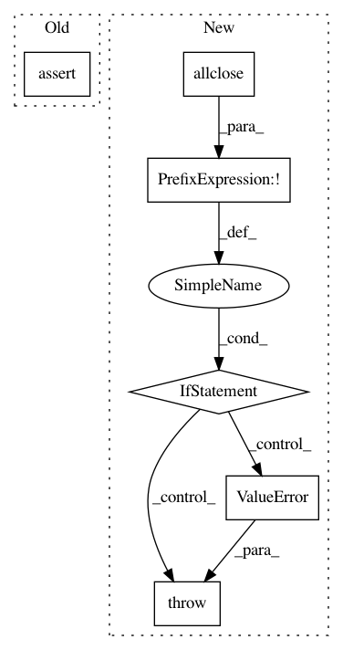

4a45e9ae54615c9da540039ae59da6b4fce941a1,kornia/geometry/transform/crop/crop2d.py,,validate_bboxes,#Any#,261
Before Change
order: top-left, top-right, bottom-right, bottom-left. The
coordinates must be in the x, y order.
assert torch.allclose((boxes[:, 1, 0] - boxes[:, 0, 0] + 1), (boxes[:, 2, 0] - boxes[:, 3, 0] + 1)), \
"Boxes must have be rectangular, while get widths %s and %s" % \
(str(boxes[:, 1, 0] - boxes[:, 0, 0] + 1), str(boxes[:, 2, 0] - boxes[:, 3, 0] + 1))
assert torch.allclose((boxes[:, 2, 1] - boxes[:, 0, 1] + 1), (boxes[:, 3, 1] - boxes[:, 1, 1] + 1)), \
"Boxes must have be rectangular, while get heights %s and %s" % \
(str(boxes[:, 2, 1] - boxes[:, 0, 1] + 1), str(boxes[:, 3, 1] - boxes[:, 1, 1] + 1))
After Change
order: top-left, top-right, bottom-right, bottom-left. The
coordinates must be in the x, y order.
if not torch.allclose((boxes[:, 1, 0] - boxes[:, 0, 0] + 1),
(boxes[:, 2, 0] - boxes[:, 3, 0] + 1)):
raise ValueError("Boxes must have be rectangular, while get widths %s and %s" %
(str(boxes[:, 1, 0] - boxes[:, 0, 0] + 1),
str(boxes[:, 2, 0] - boxes[:, 3, 0] + 1)))
if not torch.allclose((boxes[:, 2, 1] - boxes[:, 0, 1] + 1),
(boxes[:, 3, 1] - boxes[:, 1, 1] + 1)):
raise ValueError("Boxes must have be rectangular, while get heights %s and %s" %
(str(boxes[:, 2, 1] - boxes[:, 0, 1] + 1),
In pattern: SUPERPATTERN
Frequency: 3
Non-data size: 6
Instances
Project Name: arraiy/torchgeometry
Commit Name: 4a45e9ae54615c9da540039ae59da6b4fce941a1
Time: 2020-11-25
Author: edgar.riba@gmail.com
File Name: kornia/geometry/transform/crop/crop2d.py
Class Name:
Method Name: validate_bboxes
Project Name: geomstats/geomstats
Commit Name: 7e107e16e1dfff3f408cd29918b8bb050632f50a
Time: 2020-04-21
Author: ninamio78@gmail.com
File Name: examples/geomstats_in_pymanopt.py
Class Name:
Method Name: estimate_dominant_eigenvector
Project Name: nipy/dipy
Commit Name: 0c5c35a3c43c7ea4eb218805d9478f98e9af39ea
Time: 2013-01-29
Author: mrbago@gmail.com
File Name: dipy/tracking/markov.py
Class Name: MarkovIntegrator
Method Name: __init__